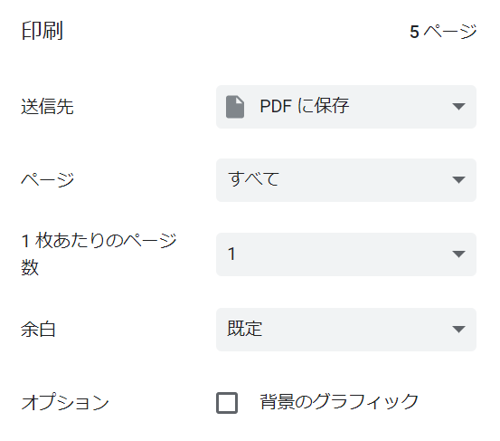

はじめに
「かんたん棋書エディタ」ではWordや面倒な設定を必要とせず、市販されている棋書に近いレイアウトで図面と文章を表示してPDFに保存することができます。
かんたん棋書エディタを用いて制作したPDFを商用利用することは問題ございません。
かんたん棋書エディタを利用することで発生したいかなる損害も、当方は責任を負いませんので予めご了承ください。
解説動画
YouTubeの使い方ガイドの動画を参照ください→
こちら
ボタン説明
保存
htmlファイルがダウンロードできます。ブラウザで開くと画面中央のビューアーのみを切り取ったものが表示されます。用途は下記の２点です。
-
ブラウザの印刷にはPDFに保存する機能があるので、これを利用して出力した図面と文章をPDFに保存することができます。
-
内容を編集したいときは[読込]ボタンを押下してhtmlファイルを選択すれば読み込むことができます。
読込
[保存]ボタンでダウンロードしたhtmlファイルを読み込むことができます。それ以外のファイルは読み込めません。ページが選択されているときはその直下に読み込んだページを追加します。選択されていなければ一番下に追加します。
追加
新しいページを追加します。ページが選択されているときはその直下に追加します。選択されていなければ一番下に追加します。ページのレイアウトは
[設定]＞[追加ページのレイアウト]から選択できます。
削除
選択されているページを削除します。削除したページを復元する機能はありません。
更新
次に説明する機能を使用したときに図面番号の更新を行います。
図面番号の自動連番機能について
図面番号を手動で入力していると、図面の追加や削除が発生したときに番号がずれてしまい大変です。そのため、自動で連番にする機能を設けています。例えば複数の図面のヘッダーの入力欄にそれぞれ
- 第(groupIDa_IDx)図
- 第(groupIDa_IDy)図
- 第(groupIDa_IDz)図
- 第(groupIDb_IDx)図
- 第(groupIDb_IDy)図
- 第(groupIDb_IDz)図
と入力して[更新]ボタンを押下するとそれぞれ以下のように出力されます。
- 第１図
- 第２図
- 第３図
- 第１図
- 第２図
- 第３図
(グループID_ID)(グループID、IDは英数字)の形式で書くことで機能を利用することができます。グループIDが同じであればグループ毎に連番にします。
設定
追加ページのレイアウト
ページのレイアウトを選択します。[追加]ボタンを押下することで選択したページを追加します。
追加ページの図面 詰将棋用レイアウト
有効に設定すると[追加]ボタンを押下したページで詰将棋用の図面が作成できます。
ページ選択
有効に設定するとページが選択可能になります。ページをクリックするとページが選択状態になります。CTRLキーを押しながら選択すると複数のページを選択できます。マウスドラッグによる複数選択も可能です。
ページ選択でできること
- [削除]ボタン押下で選択状態のページを削除
- 選択状態のページをドラッグ＆ドロップで並び変える
- ページの追加位置が選択状態のページの直下になる
ヘッダー
ヘッダーの表示非表示を切り替えます。ヘッダーには各ページにページ番号、奇数ページにタイトルが表示されます。
タイトルの表示について
[追加ページのレイアウト]で「タイトル」または「1図面(タイトル)」を選択し、追加したページにタイトルを入力することで、ヘッダーにそのタイトルを表示できます。例えば、「タイトル」ページに「第１章」（１ページ目）、「1図面(タイトル)」ページに「第１節」（２ページ目）とタイトルを入力すると３ページ以降の奇数ページに「第１章 / 第１節」が表示されます。
図面ヘッダー括弧
図面ヘッダー括弧の表示非表示を切り替えます。都度【】を入力する手間を省くことができます。
保存ファイル名
[保存]ボタン押下でファイルを保存するときのファイル名を指定できます。
エディタ
テキストエリアまたはテキストボックスに文字を入力すると中央のページ（プレビュー）に出力されます。
後手の持駒：なし
９ ８ ７ ６ ５ ４ ３ ２ １
+---------------------------+
|v香v桂v銀v金v玉v金 ・v桂v香|一
| ・ ・ ・ ・ ・v飛 ・v角 ・|二
| ・v歩v歩v歩v歩v銀 ・v歩v歩|三
|v歩 ・ ・ ・ ・v歩v歩 ・ ・|四
| ・ ・ ・ ・ ・ ・ ・ ・ ・|五
| 歩 ・ 歩 ・ ・ ・ ・ 歩 ・|六
| ・ 歩 ・ 歩 歩 歩 歩 ・ 歩|七
| ・ 角 ・ 玉 金 銀 ・ 飛 ・|八
| 香 桂 銀 金 ・ ・ ・ 桂 香|九
+---------------------------+
先手の持駒：なし
手数＝12 △４二飛 まで
BOD形式の盤面テキストは以下などの棋譜再生ソフトを使用することで出力できます。
- Kifu for Windows [編集] > [局面のコピー]
- 将棋所 [編集] > [局面コピー(KIF/KI2形式)]
- ShogiGUI [編集] > [局面コピー] > [BOD]
図面番号の参照機能
図面番号の自動連番機能を利用しているときに、自動で振られた図面番号を文章中で使用したいときがあります。そのときは図面のヘッダーのテキストボックスに入力した文字をそのまま使用してください。例えば、図面のヘッダーに「第(groupIDa_IDx)図」と入力しているならば、他のテキストエリアで「第(groupIDa_IDx)図」と入力すれば同じ図面番号が出力されます。
最終指し手の取得
BOD形式の盤面テキストに最終指し手があるとき、図面のヘッダーのテキストボックスに
moveと入力すると最終指し手に置換されます。例えば
第A図はmoveまで
と入力すると
第A図は☖４二飛まで
などのように置換されます。
ページのPDF出力
ブラウザの機能を利用して以下の手順でPDFを出力できます。
- [保存]ボタン押下でhtmlファイルをダウンロードします。
- 保存したhtmlファイルを開き、CTRL+Pなどで印刷を表示します。
-
出力をPDFに選択して保存してください。Chromeの場合は下記の画像のようになります。ページ数が多い場合は数分かかることもあります。
